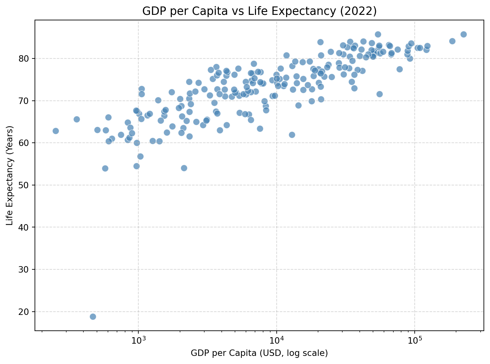
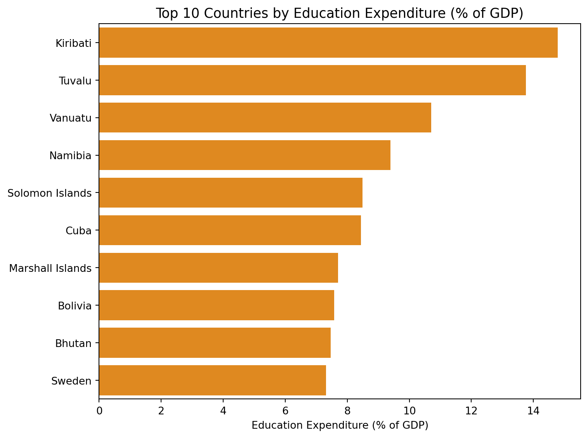

Requirement already satisfied: pandas in /opt/miniconda3/lib/python3.13/site-packages (2.3.1)
Requirement already satisfied: numpy>=1.26.0 in /opt/miniconda3/lib/python3.13/site-packages (from pandas) (2.3.1)
Requirement already satisfied: python-dateutil>=2.8.2 in /opt/miniconda3/lib/python3.13/site-packages (from pandas) (2.9.0.post0)
Requirement already satisfied: pytz>=2020.1 in /opt/miniconda3/lib/python3.13/site-packages (from pandas) (2025.2)
Requirement already satisfied: tzdata>=2022.7 in /opt/miniconda3/lib/python3.13/site-packages (from pandas) (2025.2)
Requirement already satisfied: six>=1.5 in /opt/miniconda3/lib/python3.13/site-packages (from python-dateutil>=2.8.2->pandas) (1.17.0)
Requirement already satisfied: wbgapi in /opt/miniconda3/lib/python3.13/site-packages (1.0.12)
Requirement already satisfied: requests in /opt/miniconda3/lib/python3.13/site-packages (from wbgapi) (2.32.3)
Requirement already satisfied: PyYAML in /opt/miniconda3/lib/python3.13/site-packages (from wbgapi) (6.0.3)
Requirement already satisfied: tabulate in /opt/miniconda3/lib/python3.13/site-packages (from wbgapi) (0.9.0)
Requirement already satisfied: charset-normalizer<4,>=2 in /opt/miniconda3/lib/python3.13/site-packages (from requests->wbgapi) (3.3.2)
Requirement already satisfied: idna<4,>=2.5 in /opt/miniconda3/lib/python3.13/site-packages (from requests->wbgapi) (3.7)
Requirement already satisfied: urllib3<3,>=1.21.1 in /opt/miniconda3/lib/python3.13/site-packages (from requests->wbgapi) (2.3.0)
Requirement already satisfied: certifi>=2017.4.17 in /opt/miniconda3/lib/python3.13/site-packages (from requests->wbgapi) (2025.4.26)
Requirement already satisfied: pandas in /opt/miniconda3/lib/python3.13/site-packages (2.3.1)
Requirement already satisfied: numpy in /opt/miniconda3/lib/python3.13/site-packages (2.3.1)
Requirement already satisfied: wbdata in /opt/miniconda3/lib/python3.13/site-packages (1.1.0)
Requirement already satisfied: matplotlib in /opt/miniconda3/lib/python3.13/site-packages (3.10.6)
Requirement already satisfied: seaborn in /opt/miniconda3/lib/python3.13/site-packages (0.13.2)
Requirement already satisfied: python-dateutil>=2.8.2 in /opt/miniconda3/lib/python3.13/site-packages (from pandas) (2.9.0.post0)
Requirement already satisfied: pytz>=2020.1 in /opt/miniconda3/lib/python3.13/site-packages (from pandas) (2025.2)
Requirement already satisfied: tzdata>=2022.7 in /opt/miniconda3/lib/python3.13/site-packages (from pandas) (2025.2)
Requirement already satisfied: appdirs<2,>=1.4 in /opt/miniconda3/lib/python3.13/site-packages (from wbdata) (1.4.4)
Requirement already satisfied: backoff<3,>=2.2.1 in /opt/miniconda3/lib/python3.13/site-packages (from wbdata) (2.2.1)
Requirement already satisfied: cachetools<6,>=5.3.2 in /opt/miniconda3/lib/python3.13/site-packages (from wbdata) (5.5.2)
Requirement already satisfied: dateparser<2,>=1.2.0 in /opt/miniconda3/lib/python3.13/site-packages (from wbdata) (1.2.2)
Requirement already satisfied: decorator<6,>=5.1.1 in /opt/miniconda3/lib/python3.13/site-packages (from wbdata) (5.2.1)
Requirement already satisfied: requests<3,>=2.0 in /opt/miniconda3/lib/python3.13/site-packages (from wbdata) (2.32.3)
Requirement already satisfied: shelved-cache<0.4,>=0.3.1 in /opt/miniconda3/lib/python3.13/site-packages (from wbdata) (0.3.1)
Requirement already satisfied: tabulate<1,>=0.8.5 in /opt/miniconda3/lib/python3.13/site-packages (from wbdata) (0.9.0)
Requirement already satisfied: contourpy>=1.0.1 in /opt/miniconda3/lib/python3.13/site-packages (from matplotlib) (1.3.3)
Requirement already satisfied: cycler>=0.10 in /opt/miniconda3/lib/python3.13/site-packages (from matplotlib) (0.12.1)
Requirement already satisfied: fonttools>=4.22.0 in /opt/miniconda3/lib/python3.13/site-packages (from matplotlib) (4.60.1)
Requirement already satisfied: kiwisolver>=1.3.1 in /opt/miniconda3/lib/python3.13/site-packages (from matplotlib) (1.4.9)
Requirement already satisfied: packaging>=20.0 in /opt/miniconda3/lib/python3.13/site-packages (from matplotlib) (24.2)
Requirement already satisfied: pillow>=8 in /opt/miniconda3/lib/python3.13/site-packages (from matplotlib) (11.3.0)
Requirement already satisfied: pyparsing>=2.3.1 in /opt/miniconda3/lib/python3.13/site-packages (from matplotlib) (3.2.5)
Requirement already satisfied: regex>=2024.9.11 in /opt/miniconda3/lib/python3.13/site-packages (from dateparser<2,>=1.2.0->wbdata) (2025.9.18)
Requirement already satisfied: tzlocal>=0.2 in /opt/miniconda3/lib/python3.13/site-packages (from dateparser<2,>=1.2.0->wbdata) (5.3.1)
Requirement already satisfied: six>=1.5 in /opt/miniconda3/lib/python3.13/site-packages (from python-dateutil>=2.8.2->pandas) (1.17.0)
Requirement already satisfied: charset-normalizer<4,>=2 in /opt/miniconda3/lib/python3.13/site-packages (from requests<3,>=2.0->wbdata) (3.3.2)
Requirement already satisfied: idna<4,>=2.5 in /opt/miniconda3/lib/python3.13/site-packages (from requests<3,>=2.0->wbdata) (3.7)
Requirement already satisfied: urllib3<3,>=1.21.1 in /opt/miniconda3/lib/python3.13/site-packages (from requests<3,>=2.0->wbdata) (2.3.0)
Requirement already satisfied: certifi>=2017.4.17 in /opt/miniconda3/lib/python3.13/site-packages (from requests<3,>=2.0->wbdata) (2025.4.26)World Development Indicators 2022 Analysis
1. Introduction
This report analyzes three key indicators from the World Bank’s World Development Indicators (2022): GDP per capita, life expectancy, and education expenditure (as a share of GDP).
These metrics together illustrate economic performance, human development, and policy investment in education.
2. Summary Statistics
# Define the indicators to download
indicators = {
'gdp_per_capita': 'NY.GDP.PCAP.CD',
'gdp_growth_rate': 'NY.GDP.MKTP.KD.ZG',
'inflation_rate': 'FP.CPI.TOTL.ZG',
'unemployment_rate': 'SL.UEM.TOTL.ZS',
'total_population': 'SP.POP.TOTL',
'life_expectancy': 'SP.DYN.LE00.IN',
'adult_literacy_rate': 'SE.ADT.LITR.ZS',
'income_inequality': 'SI.POV.GINI',
'health_expenditure_gdp_share': 'SH.XPD.CHEX.GD.ZS',
'measles_immunisation_rate': 'SH.IMM.MEAS',
'education_expenditure_gdp_share': 'SE.XPD.TOTL.GD.ZS',
'primary_school_enrolment_rate': 'SE.PRM.ENRR',
'exports_gdp_share': 'NE.EXP.GNFS.ZS'
}
# Get the list of country codes for the "World" region
country_codes = wb.region.members('WLD')
# Download data for countries only in 2022
df = wb.data.DataFrame(indicators.values(), economy=country_codes, time=2022, skipBlanks=True, labels=True).reset_index()
# Delete the 'economy' column
df = df.drop(columns=['economy'], errors='ignore')
# Create a reversed dictionary mapping indicator codes to names
# Rename the columns and convert all names to lowercase
df.rename(columns=lambda x: {v: k for k, v in indicators.items()}.get(x, x).lower(), inplace=True)
# Sort 'country' in ascending order
df = df.sort_values('country', ascending=True)
# Reset the index after sorting
df = df.reset_index(drop=True)
# Display the number of rows and columns
print(df.shape)
# Display the first few rows of the data
print(df.head(3))
# Save the data to a CSV file
df.to_csv('wdi.csv', index=False)(217, 14)
country inflation_rate exports_gdp_share gdp_growth_rate \
0 Afghanistan 13.712102 18.380042 -6.240172
1 Albania 6.725203 37.197082 4.826696
2 Algeria 9.265516 30.808979 3.600000
gdp_per_capita adult_literacy_rate primary_school_enrolment_rate \
0 357.261153 NaN NaN
1 6846.426694 NaN 96.371230
2 4961.552577 NaN 105.747154
education_expenditure_gdp_share measles_immunisation_rate \
0 NaN 56.0
1 2.729770 86.0
2 4.749247 79.0
health_expenditure_gdp_share income_inequality unemployment_rate \
0 23.088169 NaN 14.100
1 6.193681 NaN 10.137
2 3.623043 NaN 12.346
life_expectancy total_population
0 65.617 40578842.0
1 78.769 2777689.0
2 76.129 45477389.0 # Summary statistics for three indicators
df[['gdp_per_capita', 'life_expectancy', 'education_expenditure_gdp_share']].describe()| gdp_per_capita | life_expectancy | education_expenditure_gdp_share | |
|---|---|---|---|
| count | 208.000000 | 217.000000 | 163.000000 |
| mean | 21175.312219 | 73.108020 | 4.259828 |
| std | 31035.961639 | 7.942539 | 2.086851 |
| min | 250.634225 | 18.818000 | 0.000007 |
| 25% | 2692.573957 | 67.788000 | 2.903584 |
| 50% | 7713.094217 | 74.160976 | 4.054028 |
| 75% | 28905.928012 | 78.531000 | 5.236966 |
| max | 226052.001905 | 85.746000 | 14.786031 |
GDP per capita ranges from approximately USD 251 to USD 226,052, with a mean of around USD 21,175 and a standard deviation exceeding USD 31,000. This wide variation indicates substantial inequality in economic output across countries.
Life expectancy spans from as low as 18.8 years to 85.7 years, averaging 73.1 years. The interquartile range (IQR approximately equals to 11 years) suggests that most nations fall within a relatively consistent life span range, though a few outliers pull the minimum downward.
Education expenditure (% of GDP) averages 4.26%, with values ranging from nearly 0% to 14.8%. This reflects large differences in how much nations allocate toward education, influenced by policy priorities, income levels, and demographic pressures.
3. Visual Analysis
3.1 GDP and Life Expectancy

Figure 1 Interpretation: The scatter plot displays a strong positive correlation between GDP per capita and life expectancy across countries in 2022. As national income rises, citizens tend to live longer — reflecting improved access to healthcare, nutrition, and living standards. However, the curve flattens for high-income nations, suggesting diminishing marginal health benefits of additional income once a country achieves a certain level of economic development.
3.2 Education Expenditure by Country

Figure 2 interpretation: The bar chart highlights the ten countries investing the largest share of their GDP in education in 2022. Small island nations such as Kiribati, Tuvalu, and Vanuatu lead the list, each allocating over 10% of their GDP to education — far above the global average of approximately 4%. This trend reflects the significant emphasis these nations place on human capital development despite their limited economic scale. Larger economies like Sweden and Cuba also appear on the list, demonstrating that both developed and developing countries can prioritize education depending on their policy objectives.
| gdp_per_capita | life_expectancy | education_expenditure_gdp_share | |
|---|---|---|---|
| count | 208.00 | 217.00 | 163.00 |
| mean | 21175.31 | 73.11 | 4.26 |
| std | 31035.96 | 7.94 | 2.09 |
| min | 250.63 | 18.82 | 0.00 |
| 25% | 2692.57 | 67.79 | 2.90 |
| 50% | 7713.09 | 74.16 | 4.05 |
| 75% | 28905.93 | 78.53 | 5.24 |
| max | 226052.00 | 85.75 | 14.79 |
4. Discussion
As shown in Figure 1, countries with higher GDP per capita generally exhibit longer life expectancy. This relationship reflects how income levels correlate with access to healthcare, nutrition, and living standards.
Meanwhile, Figure 2 highlights that several small island nations allocate more than 10% of their GDP to education — a significantly higher share compared to the global average of 4%.
Finally, summary statistics presented in Table 1 provide an overview of global variation across GDP, life expectancy, and education expenditure, illustrating wide economic disparities.
According to the World Bank (Bank 2022), GDP per capita remains a central indicator of economic development. Similarly, UNESCO data (Statistics 2023) highlight that education spending varies widely by region and income level.
References
Bank, World. 2022. “World Development Indicators Database.” https://databank.worldbank.org/source/world-development-indicators.
Statistics, UNESCO Institute for. 2023. “Education Expenditure as a Share of GDP, 2023 Update.”